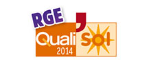
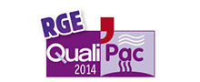

Prenez une longueur d'avance sur vos concurrents
Vous voulez rester compétitif ? Valoriser votre savoir-faire ?
Permettre à vos clients de profiter des Primes Energie, du CITE (ex. CIDD), de l'écoPTZ ?
Vous êtes déjà RGE ?
Dites-le nous et découvrez prochainement ce que ce statut vous réserve.
Un parcours en 3 étapes
Acquérir la mention RGE rapidement et simplement.
Choisir sa qualification
Autrement dit sélectionner une ou plusieurs qualifications professionnelles correspondant à votre activité.
Pour vous aider, consultez le tableau « les qualifications par produits » présent ci-dessous.
Choisir son organisme
L’organisme de formation dépend en effet de la qualification professionnelle que vous recherchez.
Pour vous aider, consultez la présentation des organismes que nous avons intégré à ce site rien que pour vous.
Choisir son référent
Autrement dit le responsable technique au sein de votre entreprise dont la formation correspondra au standard qualité attendu (quitte à compléter au besoin son parcours de formation "performance énergétique" - cf panorama des mentions et organismes).
Suivre les formations
Si celles-ci sont requises pour l’obtention de votre qualification, en particulier les modules Feedbat.
Remplir le dossier administratif
Constituer un dossier à l'organisme de qualification comprenant la preuve de compétence du responsable technique, des références de réalisations et les assurances correspondant au domaine d’activité de l'entreprise.
Une fois le dossier de demande validé, l’organisme vous délivre la qualification. Bravo ! Vous êtes RGE !
Gardez toutefois en mémoire qu'un contrôle de réalisation de chantier est réalisé dans les 24 mois suivant sa délivrance.
Le chef d'entreprise n'est pas obligé de suivre la formation. Un des employés peut suivre la formation et devenir référent pour le compte de l'entreprise.
Appelez-nous
Nous pouvons vous aider à choisir l'organisme adapté pour engager les démarches.
02 40 69 64 64
Vous souhaitez connaitre les organismes de formation près de chez vous ?
Cliquez ici
Les qualifications par produits
Les qualifications accessibles selon les produits proposés par les professionnels.
| Produits mis en oeuvre | Organisme | Qualifications RGE |
|---|---|---|
| Chaudière à condensation (Gaz et Fioul) |
|
|
| Poêle à granulés de bois |
|
|
| Chaudière bois (granulés ou bûches) |
|
|
| Pompe à chaleur Air/Air |
|
|
| Pompe à chaleur Air/Eau |
|
|
| Pompe à chaleur Géothermique |
|
|
| Produits mis en oeuvre | Organisme | Qualifications RGE |
|---|---|---|
| Panneaux solaires photovoltaïques |
|
|
| Chauffe-eau solaire individuel |
|
|
| Système solaire combiné |
|
|
| Produits mis en oeuvre | Organisme | Qualifications RGE |
|---|---|---|
| Fenêtres |
|
|
| Isolation du sol |
|
|
| Isolation des combles |
|
|
| Isolation thermique par l'extérieur |
|
|
| Isolation thermique par l'intérieur |
|
|
| VMC |
|
|
Les organismes des qualifications
Cibler le bon organisme en fonction de son domaine d’activité.
-
Eco Artisan, Artisans de la rénovation énergétique (marque CAPEB délivrée par Qualibat) est destinée aux entreprises artisanales du bâtiment qui s’engagent dans le respect d’une amélioration des performances énergétiques des logements. La qualification « Eco-Artisan » permet à l’entreprise d’être reconnue RGE.
-
Les Pros de la Performance énergétique, Artisans engagés dans la préservation de l’environnement (marque FFB délivrée par Qualibat) permet de devenir RGE soit sur son activité, soit sur une offre globale d’amélioration énergétique. La qualification « Pro de la performance énergétique » permet à l’entreprise d’être reconnue RGE.
-
Qualibat, La pyramide bleue, symbole de compétences techniques, délivre 6 qualifications permettant à l’entreprise d’être reconnue RGE. Chaque qualification est spécifique à un domaine précis.
- Qualibat Mention Efficacité énergétique pour les travaux d’isolation, de changement de menuiseries et d’installations de chaudières à condensation
- Qualibat Solaire thermique
- Qualibat Solaire photovoltaïque
- Qualibat Pompes à chaleur
- Qualibat Bois énergie
- Qualibat Rénovation énergétique offre globale
-
La qualification « Quali’PV » délivrée par l’organisme Qualit’EnR donne droit à la mention RGE pour les installateurs de solaire photovoltaïque.
- 
La qualification « Quali’Sol » délivrée par l’organisme Qualit’EnR donne droit à la mention RGE pour les installeurs de solaire thermique.
- 
La qualification « Quali’Pac » délivrée par l’organisme Qualit’EnR donne droit à la mention RGE pour les installateurs de pompes à chaleur.
-
La qualification « Quali’Bois » délivrée par l’organisme Qualit’EnR donne droit à la mention RGE pour les installateurs de bois énergie
-
Qualifelec, Qualification des entreprises du génie électrique et énergétiques, propose des qualifications en option accompagnées de la mention « économie d’énergie » ou « solaire photovoltaïque » qui peuvent accompagner une qualification en électrotechnique.
Appelez-nous
Nous pouvons vous aider à choisir l'organisme adapté pour engager les démarches.
02 40 69 64 64
Vous souhaitez connaitre les organismes de formation près de chez vous ?
Cliquez ici
FAQ
Les réponses à quelques questions que vous vous êtes certainement posées.
Quels travaux sont concernés ?
Travaux de rénovation énergétique globale
Tous travaux d’efficacité énergétique des logements
Travaux d’efficacité énergétique (isolation, fermetures, chauffage...) et d’installation d’énergies renouvelables (solaire, bois, géothermie...)
Travaux électriques en matière d’efficacité énergétique et d’installation des énergies renouvelables
Travaux d’installation d’énergie solaire photovoltaïque, d’appareils bois énergie, de pompes à chaleur, d’énergie solaire thermique
Travaux de rénovation lourde dans le cadre d’une rénovation énergétique globale
Travaux de performance énergétique
Quid des travaux non concernés (comme les travaux induits. Ex : cloisons, plafonds, couverture... par l'installateur d'un poêle à bois qualifié QualiBois ne seront pas éligibles)
Quels organismes permettent d'obtenir la mention ?
Qualibat, pour des travaux dans tous types de domaines et de spécialités liés à l'efficacité énergétique et aux énergies renouvelables
QualitENR (Qualibois, QualiPV, QualiPac, QualiSol) pour des installations d'équipements valorisant les énergies renouvelables
Qualifelec, pour des travaux electriques en matière d'efficacité énergétique et.ou d'installation des énergies renouvelables
Certibat pour des offres globales de rénovation énergétique
Cequami pour des travaux de rénovation lourd dans le cadre d'une rénovation énergétique globale des maison
+ Ecoartisans & Pros de la Performance énergétique
Combien ca coûte ?
180 à 240 euros/an selon les organismes pour le contrôle ; 220 euros la journée de formation
Une entreprise déjà qualifiée a-t-elle besoin d'obtenir la mention RGE ?
Pour les entreprises déjà qualifiées QUALIBAT, la mention « 860 Efficacité énergétique – Travaux isolés » est une autre voie possible permettant d’accéder à la reconnaissance officielle « RGE ». Cette mention peut être associée aux qualifications détenues, sur la justification d’une formation qualifiante ou diplômante aux économies d’énergie suivie par le responsable technique désigné.
Les entreprises qui sont qualifiées Qualibat EnR (PV, solaire, PAC, Bois, Efficacité Energétique « offre globale ») obtiennent d’office la mention RGE.
Combien de professionnels RGE à date ?
Entre 18000 et 20000 entreprises sont aujourd’hui qualifiées RGE auxquelles s’ajoutent 7000 à 8000 qualifications Qualit’EnR et 1000 qualifications Qualifelec. On atteint donc presque les 30.000 entreprises qualifiées RGE. Et il arrive 2600 demandes de formation par mois.
Quelle est la durée de validité de la mention RGE ?
La mention RGE a une durée de validité de 4 ans, à compter de la délivrance de l'attestation.
Son maintien pendant les 4 ans implique d'être à jour dans ses cotisations annuelles auprès des organismes certificateurs, et de fournir annuellement un questionnaire de suivi (CA, personnel...), une attestation d'assurance et un justificatif de sa situation fiscale.
Au bout des 4 ans, le parcours d'obtention du RGE doit être renouvelé (choix et dossier de qualifications).
Si l'entreprise ne peut présenter des références de chantier ou que celles-ci sont insuffisantes, la ou les qualifications - et donc le RGE - peuvent être attribuées, à titre probatoire, pour une durée de 2 ans.
Contact
Nous pouvons vous aider à choisir l'organisme adapté pour engager les démarches.